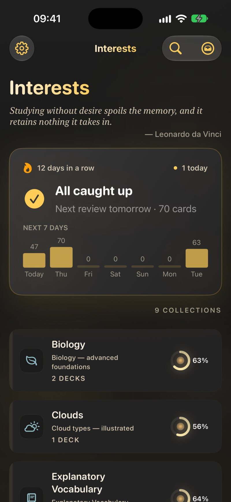
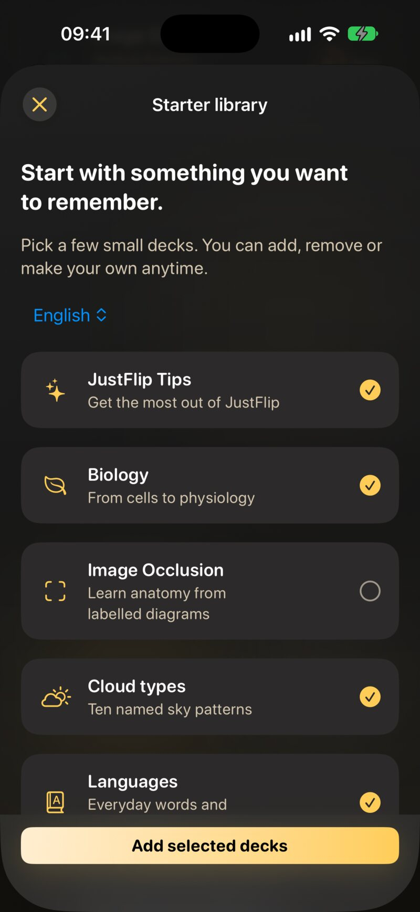
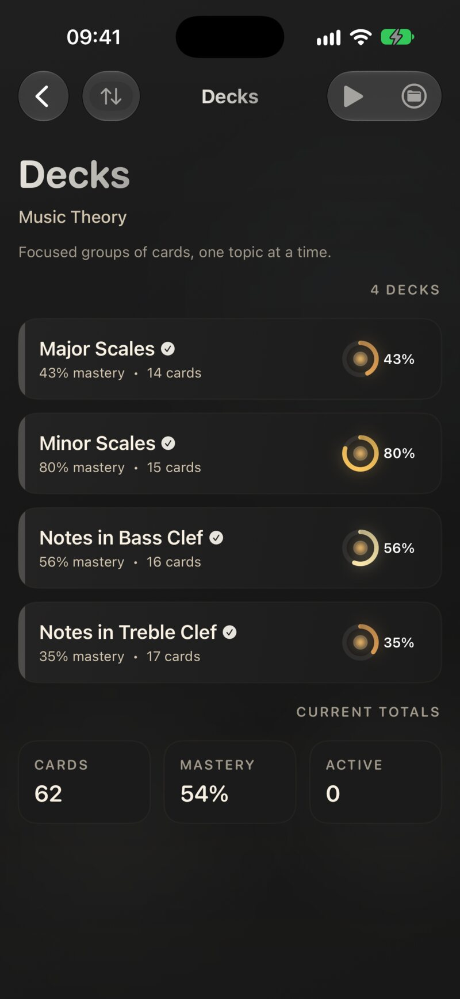

1.1 The idea in one paragraph
You remember something better when you have to pull it out of your head than when you read it again, and better still when those attempts are spread out over time. That is spaced repetition. Every time you answer a card, you tell JustFlip! how well you knew it. A card you know comes back after a few days, then a few weeks, then months. A card you missed comes back within minutes. You spend your time on what you are about to forget, not on what you already know. How the intervals grow is covered in Chapter 6.
1.2 Your library
Everything you learn sits in a three-level library:
| Level | What it is | Example |
|---|---|---|
| Interest | A subject, with its own icon | Spanish |
| Deck | A focused group of cards inside an interest | Irregular verbs |
| Card | A question and an answer | ir → to go |
An interest holds decks, and a deck holds cards. A card belongs to exactly one deck, but you can move it to another one at any time.

1.2.1 Names
JustFlip! treats two interest names as the same when they differ only in letter case, accents or spacing. If you already have Spanish and create spanish, no second interest appears: JustFlip! simply uses the one you already have. This is what stops two devices from each creating their own copy of an interest before they sync.
Deck names are not checked the same way, so JustFlip! won’t stop you from giving two decks in one interest the same name. Avoid it anyway: when you import a deck, JustFlip! adds the cards to the deck in that interest with exactly the same name. With two decks called the same, you can’t be sure which one gets them. Chapter 5 explains importing in detail.
1.2.2 Reordering
- Interests. Open the Add or import menu (the tray icon at the top of the Interests screen), choose Reorder, and drag the rows. Tap Done when you are finished. To move one interest to the top quickly, press and hold it and choose Move to Top. That is also the way to reorder with VoiceOver.
- Decks. On the Decks screen, open the folder menu, choose Edit, and drag the decks into place.
- Cards. In a deck, open the More actions menu (the ••• button) and choose Edit. The list switches to its original order while you drag, because a sorted list can’t be rearranged by hand.
1.2.3 Press and hold for more
Most actions live in the context menu: press and hold a row on iPhone or iPad, or right-click it on the Mac.
| On | The context menu offers |
|---|---|
| An interest | Edit Interest, Move to Top, Import cards, Export archive, Export statistics, Merge Into, Delete |
| A deck | Edit Deck, Ask AI (Pro), Move to Interest, Merge Into, Delete Deck |
| A card | Speak from Here (Pro), Edit Card, Ask AI, Move to Deck, Retire card or Reactivate card, Delete |
Merge Into and Move to Interest only appear when there is somewhere to merge or move to. Merging a deck moves all its cards into the deck you pick and then removes the now-empty deck; merging interests works the same way with decks.
The interest and deck editors also hold a Learning priority and an Include in device search switch. Priority is explained in Chapter 6, and device search (Spotlight) in Chapter 8.
1.2.4 Flags and tags
Two small tools help you find cards again. Both are set in the card editor (Chapter 3).
- A flag is one colour marker on a card: red, orange, green or blue. What it means is up to you, for example “check this with my teacher”.
- Tags are free words, and a card can have as many as you like. Search Cards (the magnifying glass on the Interests screen) searches questions, answers and tags across your whole library.
1.3 Your first deck, three ways
1.3.1 Pick a starter deck
When you open JustFlip! for the first time with an empty library, it offers the Starter library: a handful of small, ready-made decks, with a few already ticked. Choose a language for the decks at the top, tick what interests you, and tap Add selected decks. Not in the mood? Maybe later closes it.
The offer appears only once, but the library stays open to you: go to Settings › Help › Library at any time. For more decks, browse just-flip.app/decks.

1.3.2 Write your own
- On the Interests screen, open the Add or import menu and choose New Interest. Give it a name and pick an icon.
- Open the interest, then open the folder menu and choose New Deck.
- Open the deck, open the ••• menu and choose Add Card.
Chapter 3 covers everything a card can hold.
1.3.3 Import one
JustFlip! reads Anki packages (.apkg), CSV spreadsheets
and its own .flashcards files. Choose Import cards from the Add or
import menu, or drop a file onto the Interests screen. Paste cards in the same menu turns a list you copied,
for example from a chat AI’s reply, into a deck. You can have an AI
write a whole deck for you with the AI prompt or the coding-agent skill.
Chapter 5 walks through all of this.
1.4 A tour of the screens
On iPhone you move from left to right: Interests, then a deck list, then a deck’s cards. On iPad and Mac the same screens sit side by side (Chapter 8).
| Screen | How to get there | What it is for |
|---|---|---|
| Interests | The start screen | The Today panel, and all your subjects |
| Decks | Tap an interest | One interest’s decks, with mastery and card counts, and an interest-wide review menu |
| Cards | Tap a deck | The card list: flip cards to browse, add and edit, and start a deck review with the ▶ button |
| Testing | Start a review | One card at a time: flip, grade, next |
| Search Cards | The magnifying glass on Interests | Every card and tag in your library |
| Statistics (Pro) | The gear menu › Statistics | Retention, forecast and consistency over time (Chapter 9) |
| Settings | The gear menu › Settings | Review behaviour, speech, reminders, appearance, data safety |
| What’s new | The gear menu › What’s new | Recent features |
The Today panel at the top of the Interests screen is the one to start with. It shows how many cards are waiting across all your interests and starts a review with one tap. It appears as soon as your library holds cards. Chapter 2 is all about it.

Each deck shows a mastery ring, which fills as you get to know its cards. The dot inside warms up as reviews come due. When a dot glows, that deck wants your attention.
1.5 Onboarding and guides
The first time you open JustFlip!, a short welcome tour shows how a card flips, how swiping grades it, and what spaced repetition does. On the way it lets you choose a comfortable text size and, on its last page, turn on a daily review reminder. You can Skip it at any point.
After that, guides appear on the spot the first time you reach certain screens. A guide is a small card with an arrow pointing at the control it explains:
| Where | The guide explains |
|---|---|
| Interests | The Start review button, which reviews due cards from all your interests |
| Testing | Rate your recall: the grade buttons |
| Decks | More on every deck: press and hold a deck for more actions |
| Statistics | Choose what to measure: the interest picker |
Each guide appears only once. To see them again:
- Settings › Help › Onboarding replays the welcome tour.
- Settings › Help › Guides resets every guide, so each one appears again the next time you reach its screen.
1.6 Free and Pro
JustFlip! is free to use, with no limit on cards. JustFlip! Pro removes the two library limits and unlocks a handful of power features:
| Feature | Free | Pro |
|---|---|---|
| Interests | 3 | Unlimited |
| Decks per interest | 5 | Unlimited |
| Cards | Unlimited | Unlimited |
| Import, including CSV | ✓ | ✓ |
| iCloud sync | ✓ | ✓ |
| Ask AI about a single card | ✓ | ✓ |
| Ask AI about a whole deck | — | ✓ |
| Background listening (Speak Cards) | — | ✓ |
| Statistics | — | ✓ |
| Progress trackers | — | ✓ |
| Smart Schedule (beta) | — | ✓ |
The limits apply when you create an interest or a deck, and when you move a deck into an interest that already holds five. Pro-only items are never hidden: they carry a small lock, and tapping one opens the Pro screen and explains what it would unlock.
To see the plans, go to Settings › Pro features. There are three: Monthly, Yearly and Lifetime, which you pay for once. When a plan comes with a free trial you are eligible for, the Pro screen says Free trial available under it.
1.6.1 Restoring a purchase
Bought Pro on another device, or reinstalled the app? Open Settings › Pro features and tap Restore purchases. Use the same Apple Account you bought Pro with. If nothing turns up, JustFlip! says No previous purchases were found.
Settings › Account shows your App User ID with a Copy ID button. Support may ask you for it when you write about a purchase.
1.7 Deleting, and getting things back
You delete an interest, deck or card from its context menu. Deleting an interest takes everything inside it with it: every deck, every card and all your learning progress.
A deleted interest, deck or card is gone straight away, on every device. Before you delete an interest you might want back, choose Export archive from its context menu. The archive keeps its decks, cards and progress, and you can import it again later.
Settings › Data Safety › Recently Deleted holds interests and decks that JustFlip! set aside for you, for example the empty copy left behind after a merge. Each waits there for 30 days, and you can bring it back with Restore, or remove it for good with Delete.
JustFlip! also makes automatic backups of your library. Backups, restoring and exports are covered in Chapter 10.
Know a card so well it only wastes your time? Don’t delete it: retire it. A retired card leaves your reviews but keeps its history, and you can bring it back whenever you like. Chapter 2 shows how.